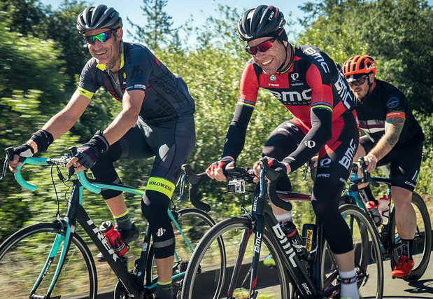
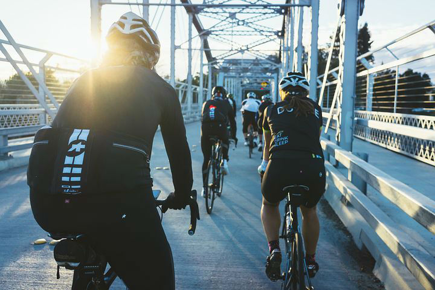
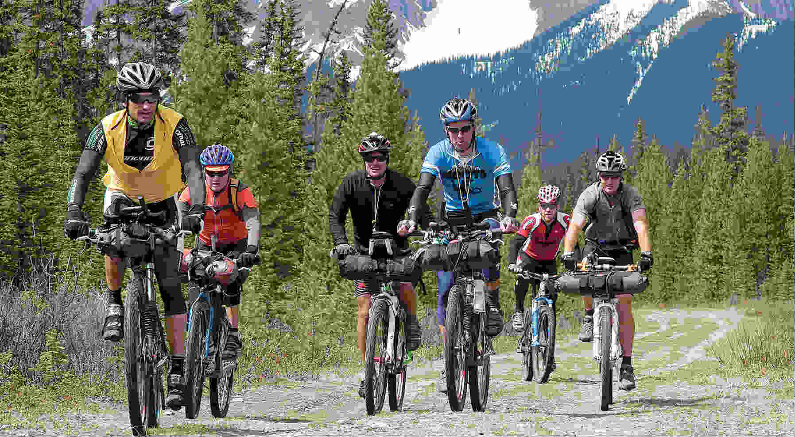
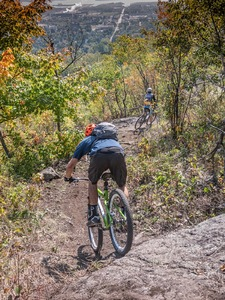
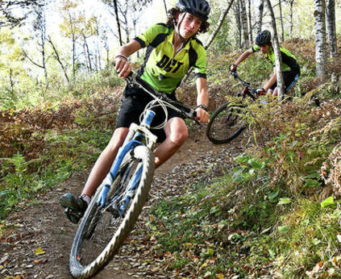

Coming events
sponsored by The Mountain Spoke

Tour de Summerlin Bike Rides - April 7, 2018
SOUTHERN NEVADA’S LONGEST RUNNING BICYCLE EVENT.
This year we will be offering three different cycling events with lengths of 80, 40, and 20 miles. Our goal is to provide challenging and enjoyable routes for serious cyclists but also encourage more people to come out and join our cycling community. Our charity this year will be Breakaway Cycling. Packet pick up for the bike rides will be held at Mcghies 4035 S Fort Apache on Friday, April 6, 2018 from noon until 7pm. Courses will remain open until 3:00 p.m. SAG (Support and Gear) will be provided on all rides. Packet pick up for the half marathon will be held in the northwest corner of the Downtown Summerlin parking lot north of Macy's on Friday, April 6, 2018 from 10am until 6pm.
- All rides will start and finish at Downtown Summerlin.
- 80 mile ride - 7:00am
- 40 mile ride - 8:00am
- 20 mile ride - 9:00am
- Half marathon - 7:15am

Ride2Boulevardia - June 15, 2018
WE RIDE TO BEAT CANCER ON A BIKE.
Join us Saturday, June 16th for a 15, 31 or 62 mile ride,
then enjoy complimentary admission to the Boulevardia festival. Early bird registration ends Sunday, April 15th.
- General admission ticket for Saturday, June 16th at Boulevardia
- One (1) $5 food voucher
- Ride2Boulevardia cotton blend T-shirt
- Ride2Boulevardia sponsor goodie bag
- Start Times
- 62-mile ride: 7:00 am
- 31-mile ride: 8:00 am
- 15-mile ride: 9:00 am
About our Beneficiaries
Cancer Action is a community-based non-profit offering programs and services addressing the physical, social, emotional, financial and spiritual needs of people with cancer, their family and friends.
Each year Children’s Mercy Cancer Center provides comprehensive care to nearly 2,000 children with childhood cancers, sickle cell disease, hemophilia and other blood disorders. Their commitment to clinical research and innovation has helped the Children’s Mercy Cancer Center earn recognition as one of the top cancer programs for kids in the nation by U.S. News and World Report. Learn more at childrensmercy.org.
Cycle the Continental Divide
The Great Divide Mountain Bike Route (GDMBR) is the most recognized and important off-pavement cycling route in the United States, if not the world. The route crisscrosses the Continental Divide from north to south starting in Banff, Alberta, Canada and finishing at the US/Mexico border in Antelope Wells, New Mexico.
- Who: Any determined cyclist may challenge the Great Divide Route at any time, in either direction, to qualify for the Tour Divide (TD) General Classification (GC).
- When: All summer long...however, an informal common start date known as the 'grand depart' traditionally kicks off the season 2nd week of June from both termini.
- Spirit: Above all, attempts are intended to be solo / self-supported, self-timed, and observed as one stage, i.e. the clock runs non-stop. The challenge is complete upon arrival to the opposite GDMBR terminus from start. There are no required checkpoints or designated rest periods on course. There is no finish time cut-off, however, current convention considers a competitive Divide Route finish time as approximately 1.5 times (x) course records. Currently this = 25days (~110 mi/day) for men, and 29.5 days (93 mi/day) for women.
- Modus operandi: To complete the Route, a rider may resupply food / equipment, rent a room, launder clothing, even service their
bike at commercial shops along the way. The intent is to ride unsupported between towns, and function self-supported when in towns.
Any services utilized must always be commercially available to all challengers and not pre-arranged[1]. No private resupply, no
private lodging.
Tour Divide strives for equal opportunity within the GC. Whether doing an independent time trial or tackling the grand départ, TD requires that every challenger—from those living along the route to those living on other continents—have an equal playing field. Therefore, outside assistance[2] with navigation, lodging or resupply (especially receipt of supplies from a non-commercial shipper) is prohibited. Visitation: Divide racing is not intended to be a spectator sport! However, route-town locals only may interact with (i.e. visit briefly, cheer on) thru-racers as they pass through their locale. Out-of-town visitation to the GDMBR mid-race from challengers' family or friends—even if only a 'loosely-planned', remote possibility for rider rendezvous—is prohibited. - TD Route: Aside from the 4 permitted deviations listed below, challengers must always ride 100% of the Great Divide ‘main route’ as denoted by the most current map edition published by ACA. For TD`13, the 2011 printing is still the most current edition. Previous map editions may not be used unless updated with the most current ACA Addenda. Addenda 'sets' are specific to each map printing edition. *Don't disqualify a perfectly good time trial simply because your maps are outdated and/or you paired them with the wrong addenda. There is a supplemental GPX file of the official TD 'race route' revised annually. Refer to it, even if not navigating by GPS.
 